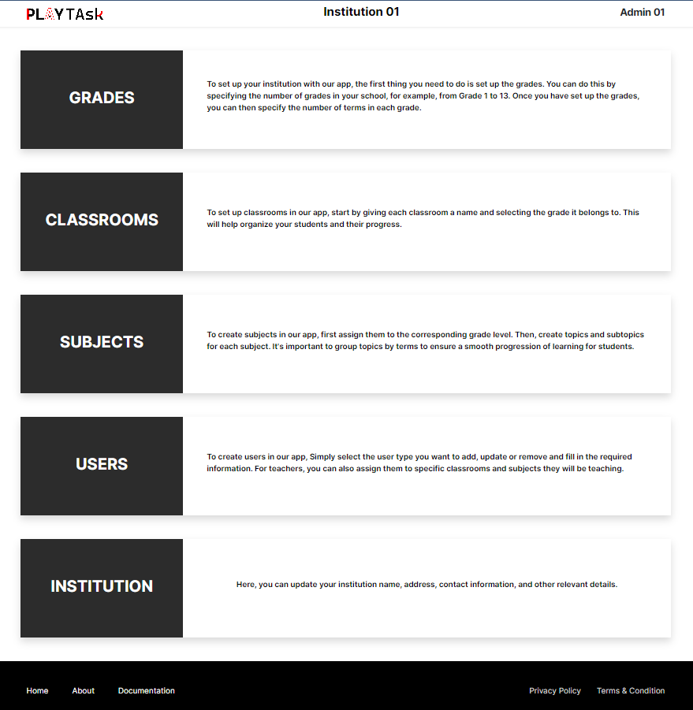
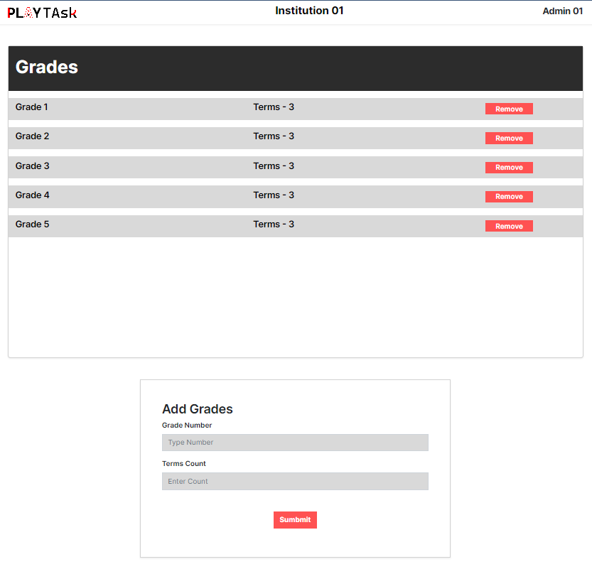
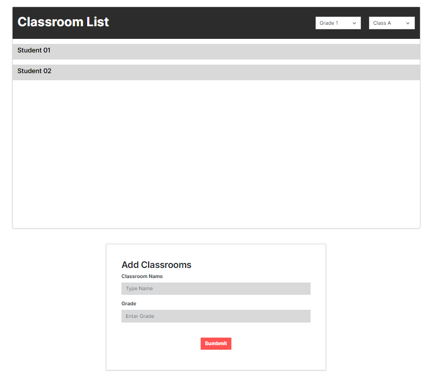
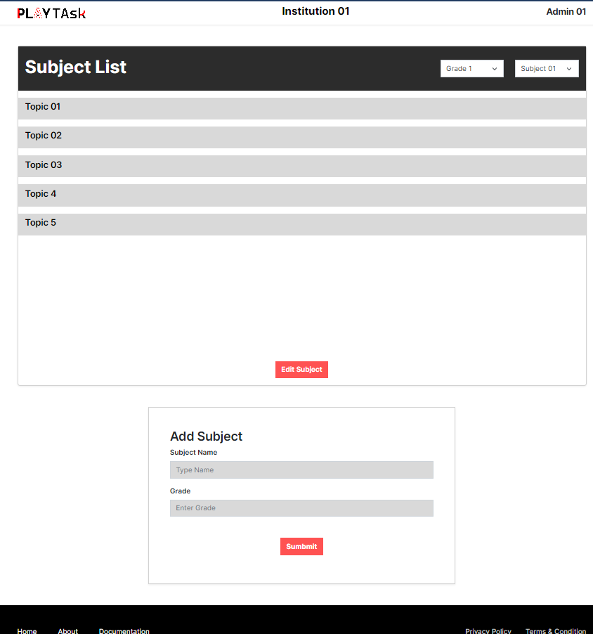
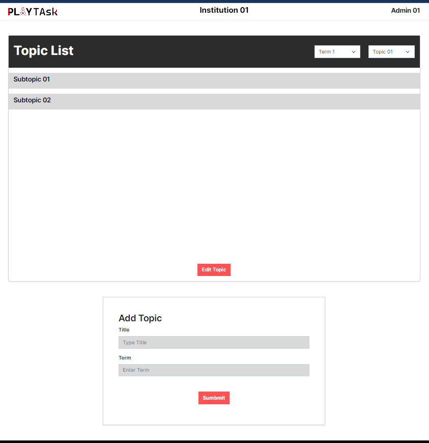

School Management Documentation
Introduction
Welcome to the School Management Documentation for Play Task! Play Task is a comprehensive educational system designed to provide tailored and optimized experiences for educational institutions, enabling efficient school management and customizable interactive learning activities. This documentation aims to guide administrators, teachers, and other stakeholders in effectively utilizing the school management features provided by Play Task. By leveraging these features, schools in Sri Lanka can streamline administrative tasks, enhance collaboration, and create engaging learning environments for their students.
Play Task offers a wide range of school management features, empowering institutions to efficiently manage their day-to-day operations. Administrators can register their institution, build their school environment, and add users such as admins, teachers, and students. Additionally, they can create subjects and classrooms, facilitating easy organization of educational resources. Through the Play Task desktop and web applications, teachers can create engaging lessons, upload resources, manage assessments, and track student progress. Students, on the other hand, can access their assignments, collaborate with peers, and engage in interactive learning experiences. The Play Task school management system provides a holistic solution to empower educational institutions in Sri Lanka, enabling them to deliver a seamless and personalized learning experience for their students.
This documentation will provide detailed instructions on each feature of the school management system, ensuring that users can make the most of Play Task's capabilities. Whether you are an administrator, teacher, or stakeholder, this documentation will serve as your comprehensive guide to effectively utilizing the school management features offered by Play Task. Let's dive in and explore the powerful tools that Play Task provides to transform the educational experience for your institution!
Registration
To get started with Play Task, schools can register to the system by filling out a simple registration form available on the website. This form collects basic information about the institution, such as its name, location, and contact details. Once the registration form is submitted, schools are prompted to register a General Admin, who will have overarching administrative privileges within the institution. The General Admin is responsible for managing the school's Play Task account and overseeing various administrative tasks.
After completing the registration process, the General Admin gains access to the institution's dashboard, a centralized hub for managing and organizing school-related activities. Access to the dashboard is exclusive to admins and requires a two-step login process. Initially, the General Admin must log in using the institution email provided during registration. Following that, they need to provide their admin email and password for authentication. This ensures secure access to the dashboard and prevents unauthorized entry.
Dashboard
The institution dashboard in Play Task serves as a centralized hub for administrators to customize their institution's environment and manage various aspects of the system. It offers a range of functionalities that empower administrators to create grades, classrooms, subjects, and register students, teachers, and other administrators. The dashboard provides comprehensive instructions for each task, ensuring a seamless setup process. Here's a step-by-step guide to using the institution dashboard:
1. Adding Grades:
- Access the institution dashboard as a non-academic or general administrator.
- Navigate to the "Grades" section.
- Click on the "Add Grade" button.
- Enter the grade level details, such as Grade 1, Grade 2, and so on.
- Save the information to create the grade levels.
2. Creating and Assigning Classrooms:
- In the institution dashboard, go to the "Classrooms" section.
- Select the respective grade to which you want to add classrooms.
- Click on the "Add Classroom" button.
- Provide the necessary information, such as Class 1 - A, Class 1 - B, Class 2 - A, and so on.
- Save the information to create the classrooms and assign them to the corresponding grades.
3. Creating and Assigning Subjects:
- Access the institution dashboard as an academic administrator.
- Go to the "Subjects" section.
- Click on the "Add Subject" button.
- Fill in the subject details, such as Grade 1 Mathematics, Grade 2 Science, and so on.
- Save the information to create the subjects and assign them to the respective grades.
4. Registering Teachers and Students:
- As a general administrator, navigate to the "Users" section in the institution dashboard.
- Choose the appropriate option to register teachers or students.
- Fill in the required details, such as name, email, and role (teacher or student).
- Save the information to register teachers or students.
5. Assigning Subjects and Classrooms:
- In the institution dashboard, access the "Users" section.
- Locate the respective teacher or student profile.
- Assign subjects by selecting the appropriate subjects for teachers and classrooms for students.
- Save the changes to assign subjects and classrooms to individual teachers and students.
Grades
The customization of grades is facilitated through a dedicated form accessible to non-academic administrators. They are responsible for adding and removing grades within the institution. When adding grades, administrators are required to specify the number of terms associated with each grade. Each grade is uniquely identified by its number, and duplicates are not allowed. The system also provides a comprehensive list of grades for administrators of all types.
Classrooms
Non-academic administrators are entrusted with the task of adding classrooms. The classroom creation form allows administrators to assign a name and a grade number to each classroom. It is important to note that classrooms with the same name within the same grade cannot coexist. Additionally, a list view is available to display classrooms in each grade, along with a roster of students assigned to each classroom.
Subjects
 
Academic administrators have the responsibility of adding and customizing subjects within the system. They can add subjects specific to each grade and display them accordingly. The system enforces a constraint that prevents the addition of subjects with identical names to the same grade. After adding subjects, administrators have the ability to create topics within each subject. Topics are grouped according to the term number of the corresponding grade. Similar to subjects, topics are subject to a uniqueness constraint for their names within the same subject.
Furthermore, administrators can select a topic and add subtopics to it. This feature allows for the addition and modification of subtopic data, including the subtopic name, its corresponding topic, and descriptive instructions to adhere to the institution's game creation standards. Administrators can add, select, and edit subtopics, ensuring that no subtopic with the same name is added to the same topic.